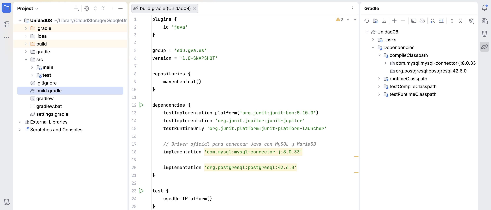

Unidad 8. Acceso a Bases de Datos
1. Introducción: De Ficheros a Bases de Datos
En la unidad anterior aprendimos a persistir información en ficheros de texto. Aunque los ficheros son geniales para guardar configuraciones o datos secuenciales (como un log), presentan graves problemas cuando el volumen de datos crece:
- Búsquedas ineficientes: Para encontrar un dato, a menudo hay que leer el fichero entero.
- Problemas de concurrencia: ¿Qué pasa si dos usuarios intentan escribir en el mismo fichero a la vez?
- Falta de relaciones: Es muy difícil vincular datos complejos (ej: "Dime todos los artículos que pertenecen al fabricante Kingston").
Para solucionar esto, la industria utiliza Sistemas Gestores de Bases de Datos Relacionales (SGBDR) como MySQL, MariaDB, PostgreSQL o Oracle. En esta unidad aprenderemos a conectar nuestras aplicaciones Java con una base de datos real.
Para nuestros ejemplos, utilizaremos la siguiente base de datos de una Tienda Informática:
2. JDBC y el concepto de API
JDBC (Java Database Connectivity) es la API estándar de Java para conectarse a bases de datos relacionales (SGBDR). Forma parte del núcleo de Java (paquete java.sql) y proporciona todas las herramientas necesarias para enviar sentencias SQL, establecer conexiones y procesar los resultados obtenidos.
Una API (Application Programming Interface) es un conjunto de reglas, interfaces y clases que permiten que dos piezas de software se comuniquen. En este contexto, JDBC define las operaciones genéricas para interactuar con cualquier base de datos, ocultando la complejidad subyacente de cada fabricante.
graph LR
A[Nuestra App Java] -->|Usa clases genéricas| B(API JDBC)
B -->|Traduce| C[Driver MySQL/MariaDB]
C -->|Habla en red| D[(Base de Datos Real)]2.1. Ventajas de usar JDBC
La magia de JDBC radica en su nivel de abstracción. Entre sus principales ventajas destacan:
- Independencia del Gestor de Base de Datos (SGBDR): Escribimos el código Java una sola vez. Si mañana cambiamos nuestra base de datos de MySQL a PostgreSQL o a Oracle, solo tenemos que cambiar la librería traductora (el "Driver") y la cadena de conexión. ¡La lógica de nuestro código Java se mantiene intacta!
- Portabilidad: Al ser parte del estándar de Java, se beneficia de su filosofía "Escribe una vez, ejecuta donde sea" (Write Once, Run Anywhere). Tu aplicación se conectará a la base de datos de la misma forma en Windows, Linux o macOS.
- Curva de aprendizaje suave: Proporciona un conjunto de clases e interfaces uniformes y bien diseñadas (como
Connection,PreparedStatementoResultSet) que estandarizan el flujo de trabajo independientemente de la base de datos utilizada. - Ecosistema Empresarial: JDBC es la base sobre la cual se construyen frameworks más avanzados y complejos del mundo Java (como Hibernate, JPA o Spring Data). Conocer el funcionamiento de JDBC es indispensable para entender y dominar estas herramientas de alto nivel.
3. Preparación del Entorno (Dependencias)
Java incluye la API JDBC de fábrica instalada en su núcleo, pero NO incluye los drivers específicos de cada base de datos. Un driver es una librería externa (un archivo .jar) desarrollada por el fabricante que sabe exactamente cómo traducir las órdenes genéricas de Java (JDBC) al dialecto específico de su base de datos (MySQL, SQLite, PostgreSQL, etc.).
Para añadir este driver a nuestro proyecto de forma profesional, no debemos descargar el archivo a mano. En su lugar, utilizamos un Gestor de Dependencias como Gradle (el estándar moderno ampliamente utilizado en IDEs como IntelliJ IDEA).
3.1. Configuración paso a paso con Gradle
A continuación, veremos cómo añadir el driver de tu base de datos (MySQL / MariaDB o PostgreSQL) a tu proyecto usando Gradle:
Paso 1: Localizar el archivo de configuración
En tu proyecto Gradle, busca en la carpeta raíz un archivo llamado build.gradle. Este archivo contiene la receta de construcción y las dependencias de tu proyecto.
Paso 2: Añadir la dependencia
Abre el archivo y busca el bloque llamado dependencies { ... }. Dentro de este bloque, debes añadir la línea correspondiente al conector JDBC del motor que vayas a utilizar.
Edita el archivo para incluir la dependencia que necesites (asegúrate de incluir solo la correspondiente a tu base de datos):
¿Qué significan estas instrucciones?
implementation: Le indica a Gradle que esta librería es necesaria para compilar y ejecutar nuestro programa.- Grupo y Artefacto (ej.
com.mysql:mysql-connector-joorg.postgresql:postgresql): Es el identificador único de la librería en los repositorios centrales de internet. - Versión (ej.
8.0.33o42.6.0): Es la versión exacta que queremos descargar.
Paso 3: Sincronizar el proyecto (¡Paso crítico!)
Una vez modificado el archivo build.gradle, el driver todavía no está en tu ordenador. Necesitas indicarle a tu entorno de desarrollo que aplique y descargue esos cambios.
- Si utilizas IntelliJ IDEA, tras modificar el archivo, aparecerá un pequeño icono flotante en la parte superior derecha del editor con un elefante y unas flechas circulares. Debes hacer clic en "Load Gradle Changes" (o en el icono de sincronizar).
- En ese instante, Gradle se conectará a internet, descargará automáticamente el
.jardel driver desde el repositorio central y lo configurará en tu proyecto Java de manera invisible. En cuanto acabe la barra de progreso, ¡tu entorno estará listo!

La importancia de Gradle y Maven
Aprender a manejar herramientas como Gradle (o su alternativa, Maven) te ahorrará muchísimos problemas de versiones y librerías perdidas ("En mi máquina sí funciona"). Son el estándar absoluto hoy en día en cualquier empresa de desarrollo de software.
Práctica Guiada: Tu Primer Proyecto JDBC
¡Es hora de mancharse las manos de código! Vamos a crear desde cero el entorno de trabajo que usaremos durante toda esta unidad.
- Crear el proyecto: Abre IntelliJ IDEA (o tu IDE favorito) y crea un nuevo proyecto seleccionando explícitamente Gradle como sistema de construcción (Build system).
- Configurar el
build.gradle: Localiza el archivo de configuración de Gradle y añade dentro de su bloquedependenciesla ruta oficial del conector JDBC para tu motor de base de datos (PostgreSQL, preferentemente), tal y como acabamos de ver en el apartado 3.1. - Sincronizar el entorno: Recarga el proyecto (pulsando en el icono del elefante u opción de sincronizar) para que la librería sea descargada de internet e integrada en el proyecto de manera automática.
- Verificar las dependencias: Asegúrate de que no existan líneas rojas subyacentes indicando un error en el archivo
build.gradle. Si todo se cargó con éxito, tu proyecto Java recién nacido ya estará capacitado arquitectónicamente para conectarse con un Sistema Gestor de Bases de Datos.
4. El Conector de la BD (Connection)
Para operar con la base de datos, el primer paso indispensable es establecer un "túnel" de comunicación. Esto se hace mediante la interfaz Connection y la clase DriverManager.
Necesitamos tres datos clave (que encapsularemos como Constantes de clase para centralizar su configuración y evitar sobreescrituras):
- URL de conexión: Indica el protocolo, la IP, el puerto y el nombre de la BD (ej.
jdbc:postgresql://localhost:5432/tienda_informatica). - Usuario: Credencial de acceso (ej:
postgres). - Contraseña: Clave del usuario.
Como la conexión por red puede fallar, es obligatorio usar try-catch (concretamente capturando SQLException). Una buena práctica es encapsular y aislar esta lógica en su propio método (por ejemplo, conectar()) en lugar de amontonar código en el main.
Práctica Guiada: Tu primera clase de Conexión
¡Seguimos ampliando el proyecto! Ahora vamos a sentar las bases de la comunicación creando nuestra primera clase.
- Crear el paquete: En tu proyecto (dentro de
src/main/java), crea un paquete organizativo llamadomodelodatabase. - Crear la clase: Crea una nueva clase de Java llamada
ConexionBDy copia o transcribe la estructura que hemos definido arriba. - Ajustar constantes: Modifica el valor de las constantes
USUARIOyPASSWORDpara que coincidan explícitamente con los que configuraste durante la instalación de tu servidor PostgreSQL. - Comprobar errores sintácticos: Revisa que los
importfuncionen y que tu IDE no marque la interfazConnectionen rojo. Si aparece subrayada en rojo, significa que la descarga del driver en elbuild.gradle(la práctica 1) no se sincronizó correctamente. - Prueba de fuego: Ejecuta el método
mainalojado dentro deConexionBD. Si la consola inferior imprime "¡Conexión establecida con éxito!", ¡enhorabuena, tu programa Java y tu Base de Datos ya están hablando!
5. Ejecución de Consultas: Planificación y Tipos
Para interactuar con una base de datos relacional desde Java, utilizaremos principalmente cuatro objetos o interfaces clave proporcionados por la API JDBC. Conocer su propósito es fundamental para entender cómo fluyen los datos en nuestra aplicación.
| Objeto / Interfaz | Descripción | Propósito principal |
|---|---|---|
Connection |
Representa la conexión física con la base de datos. Es el punto de partida (el "túnel" de comunicación). | Iniciar la comunicación, gestionar transacciones y servir como fábrica para crear objetos Statement o PreparedStatement. |
Statement |
Se utiliza para ejecutar sentencias SQL estáticas (sin parámetros fijados en tiempo de ejecución) y obtener sus resultados. | Ejecutar consultas simples y estáticas (ej. SELECT * FROM tabla). |
PreparedStatement |
Una subinterfaz de Statement que representa una sentencia SQL precompilada. Permite inyectar parámetros (?) de forma dinámica y segura. |
Ejecutar consultas dinámicas protegiendo contra la inyección SQL (ej. SELECT * FROM tabla WHERE id = ?). |
ResultSet |
Representa el conjunto de resultados (la tabla de datos) generado al ejecutar una orden SELECT. |
Actúa como un cursor o iterador que nos permite recorrer la tabla virtual resultante fila por fila y extraer sus valores. |
La regla de oro de la seguridad
NUNCA construyas una consulta SQL concatenando Strings con variables del usuario (ej: "SELECT * FROM tabla WHERE id = " + idUsuario). Esto abre la puerta a la vulnerabilidad más famosa de la historia: la Inyección SQL. Utiliza siempre PreparedStatement.
5.2. El Ciclo de Vida de una Consulta (Planificación)
Cualquier interacción con la base de datos sigue siempre un ciclo de vida compuesto de tres fases fundamentales: preparación, ejecución y tratamiento.
graph TD
A(1. Preparación) -->|Llenamos el vehículo con datos| B(2. Ejecución)
B -->|La BD procesa la orden| C{¿Qué método usamos?}
C -->|executeQuery| D[3. Tratamiento: ResultSet]
C -->|executeUpdate| E[3. Tratamiento: Filas afectadas]- Preparación: Se define el texto de la sentencia SQL asegurada (usualmente con las interrogaciones
?reservando espacios en unPreparedStatement) y se le inyectan los valores reales que el usuario haya escrito en el formulario. - Ejecución: El "vehículo" sale de nuestra aplicación Java hacia el motor de base de datos para que esta valide y procese la instrucción de forma segura sin peligro de inyección.
- Tratamiento: La base de datos responde. Si hemos leído información (
SELECT), debemos iterar y traducir la tabla devuelta fila a fila con unResultSet. Si hemos modificado datos (INSERT,UPDATE,DELETE), recibiremos un número ointcomprobando el número de registros que han sido modificados.
5.3. Tipos de Ejecución
Dependiendo de la consulta SQL que envíemos en la fase de Ejecución, invocaremos un método diferente:
executeQuery(): Para consultasSELECT. Devuelve un objetoResultSet(una tabla con los resultados).executeUpdate(): ParaINSERT,UPDATEoDELETE. Devuelve un número entero (int) que indica cuántas filas han sido modificadas.
6. Operaciones CRUD en Acción
CRUD son las siglas de Create, Read, Update, Delete (Crear, Leer, Actualizar, Borrar). Son las cuatro operaciones fundamentales en cualquier base de datos. A continuación, vamos a desglosar en qué consiste cada una para luego realizar un ejemplo práctico completo integrando todas en una sola clase Java.
6.1. CREATE (Insertar)
Para añadir registros nuevos a la base de datos se utiliza una consulta INSERT ejecutada a través de un PreparedStatement llamando al método executeUpdate().
- Las interrogaciones
?actúan de marcadores de posición. - Debemos rellenar esas posiciones invocando los métodos
set...()(ej.setInt(),setString()) antes de ejecutar. - El resultado de
executeUpdate()es un número entero (int) que te dice exactamente cuántas filas se han insertado.
6.2. READ (Leer / SELECT)
Para rescatar y leer información usamos el método executeQuery(). A diferencia del resto de operaciones, esta es la única que no devuelve un número entero, sino un puntero a una tabla de datos llamado ResultSet.
- Esencialmente, el
ResultSetse comporta de inicio iterador que apunta una posición antes de la primera fila. - Con
rs.next()avanzamos. Si hay datos en esa fila devuelvetrue, y si la tabla terminó devuelvefalse(por eso iteramos con unwhile). - Dentro del bucle usamos
rs.get...()pasando como argumento en texto exacto del nombre de la columna para recuperar sus valores.
6.3. UPDATE (Actualizar)
La modificación de registros comparte la mecánica exacta de la inserción de datos haciendo uso del executeUpdate() pero con sentencias UPDATE ... SET.
- Peligro fatal: Jamás lances un
UPDATEsin rellenar la cláusulaWHERE. Si no acotas qué id quieres cambiar, corromperás y cambiarás toda la tabla. - Igualmente, el valor devuelto indicará el número de registros que acaban de ser sobrescritos.
6.4. DELETE (Borrar)
Borrar consiste en deshacerse de un registro para siempre mediante un DELETE FROM. También lanza un executeUpdate().
- Como con el UPDATE, si olvidas el
WHERE, vaciarás y purgarás por completo tu tabla. - Suele ser la consulta que requiere inyectar menos parámetros, y el retorno confirma cuántas filas han sido realmente eliminadas.
6.5. Ejemplo Completo Final (PruebaCRUD)
Para resumir la sección, presentaremos un código completo Java. Suponiendo que sigamos teniendo nuestra clase ConexionBD del punto 4, este código creará un artículo nuevo, lo buscará en la base de datos para mostrar que existe, cambiará su nombre a "Monitor Rebajado", y finalmente lo purgará de la base de datos.
Todo en secuencia.
Práctica Guiada: Jugando con el CRUD
Ha llegado el momento de poner a prueba la sintaxis SQL. Crea la clase PruebaCRUD, asegúrate de que tiene acceso a ConexionBD y ejecuta el programa.
Una vez te funcione el flujo por defecto, intenta realizar las siguientes variaciones para ganar destreza:
- Añadir: Modifica el código de inserción para crear dos artículos distintos a la vez (por ejemplo, un "Ratón Inalámbrico" y unos "Auriculares Gaming").
- Actualizar: Cambia la sentencia
UPDATEpara que, en lugar de modificar el nombre y el precio, modifique elid_fab(fabricante) del artículo 2 traspasándolo al fabricante 1. - Borrar / Persistencia: Comenta (desactiva) el bloque de código dedicado al
DELETE, ejecuta el programa, y comprueba visualmente (usando IntelliJ u otro cliente) cómo tus nuevos datos se han quedado guardados de forma totalmente persistente en tu PostgreSQL. - El reto del Fabricante: Crea un bloque desde cero para insertar un nuevo Fabricante en la base de datos (ej. id 6, nombre "Corsair").
7. Arquitectura Profesional: Construcción de un DAO
Si escribimos el código SQL mezclado con la lógica de nuestra aplicación (nuestros menús, nuestras ventanas), el código se volverá un caos inmanejable.
Para evitar esto, la industria utiliza un Patrón de Diseño llamado DAO (Data Access Object).
La filosofía del DAO es sencilla: Ocultar todo el código SQL en una clase independiente.
Si el programa principal quiere un artículo, no hace un SELECT; en su lugar, le pide un objeto Articulo a la clase ArticuloDAO.
graph LR
A[Main / Lógica de App] -->|Pide o guarda objetos| B[ArticuloDAO]
B -->|Ejecuta SQL seguro| C[(Base de Datos)]7.1. Paso 1: El Modelo (La Clase POJO)
El primer paso para aplicar el patrón DAO es crear una representación de nuestra tabla SQL mediante una clase en Java. A estas clases transaccionales se las conoce comúnmente en la industria técnica como POJO (Plain Old Java Object - Objeto Java simple y tradicional).
Un POJO es simplemente una clase estándar que cumple tres características fundamentales:
- Contiene atributos privados que mapean directamente las columnas de la tabla de la base de datos.
- Contiene constructores para instanciar e inicializar la clase.
- Ofrece métodos Getters y Setters públicos para leer y modificar sus datos.
Estas clases no heredan de lógicas complejas ni cargan librerías de terceros; su único propósito es servir como un contendor limpio y ligero para transportar información desde la base de datos hacia nuestro programa, y viceversa.
7.2. Paso 2: La Clase DAO
Aquí agrupamos todas las operaciones CRUD referidas a los artículos en un único punto centralizado. A continuación se muestra su diagrama de clases UML con los atributos y métodos de las operaciones:
classDiagram
class ArticuloDAO {
+ ArrayList~Articulo~ obtenerTodos()
+ boolean insertar(Articulo art)
+ boolean actualizar(Articulo art)
+ boolean eliminar(int idArticulo)
+ Articulo obtenerPorId(int idArticulo)
}7.3. Paso 3: Uso en el Programa Principal
Llegó el momento de recoger los frutos de nuestra arquitectura orientada a objetos. Nuestro programa principal (la clase AppTienda, que perfectamente podría representar la lógica detrás de una ventana visual o un menú) ya no se ensuciará con cadenas de texto SQL, interrogaciones enredadas ni problemas sintácticos con la base de datos.
Toda esa complejidad técnica queda encapsulada en la capa inferior. El programa ahora simplemente instancia un objeto DAO, le pasa objetos Java convencionales (nuestros POJOs) y recibe resultados limpios y tipados. Al delegar la conexión internamente en el DAO a través de ConexionBD, nuestro main se desliga por competo de abrir y cerrar túneles.
Observa lo legible, abstracto y fácil de mantener que resulta el código de alto nivel:
Reto Final de Unidad: Diseñando la Aplicación
Basándote en el ArticuloDAO que hemos visto:
- Implementa el método
public boolean eliminar(int idArticulo). Deberá ejecutar unDELETEen la base de datos para borrar el artículo especificado por su id. - Implementa un método
public Articulo obtenerPorId(int idArticulo). Deberá hacer unSELECTcon unWHERE, extraer el resultado y devolver un solo objetoArticulo(onullsi no existe). - Implementa el método
public boolean actualizar(Articulo art). Deberá ejecutar unUPDATEbasándose en el id del objeto para sobrescribir en bloque sus atributos. - Aplicación Final: Construye una clase nueva (ej.
MenuTienda) que muestre un menú interactivo por terminal (usandoScanner). El menú iterará en bucle y permitirá al usuario elegir entre:- Listar todos los artículos.
- Buscar y mostrar un artículo concreto por id.
- Dar de alta un nuevo artículo (pidiendo los campos).
- Modificar los datos de un artículo existente.
- Eliminar un artículo.
- Salir del programa.
El objetivo principal de esta práctica es que estructures un programa donde tu clase principal visual interactúe exclusivamente con los métodos Java de tu ArticuloDAO, manteniendo las mecánicas SQL totalmente separadas e invisibles para el menú.
8. Estructuración y Empaquetado del Proyecto
A medida que nuestras aplicaciones crecen, tener todos los archivos Java mezclados dentro de la misma carpeta raíz (o en el paquete "por defecto") acaba produciendo un caos organizativo insostenible.
Una buena práctica universal en la industria del software es separar nuestras clases en diferentes paquetes (Packages en Java) dependiendo de la responsabilidad o tarea principal que realicen. A este famoso patrón arquitectónico se le conoce como Separación de Responsabilidades.
De cara a este reto final y a tus futuros proyectos profesionales orientados al acceso a datos, tu árbol de carpetas principal (src/main/java/) debería asimilarse a la siguiente estructura formal:
8.1. ¿Por qué organizarlo en paquetes?
- Escalabilidad: Si en el futuro decides sustituir el espartano
MenuTienda.javade texto por una ventana visual moderna (VentanaApp.java), las capas de conexión (database) y los modelos (model) no sufren ningún cambio porque están totalmente divorciados de la interfaz gráfica. - Mantenibilidad: Si salta una excepción SQL durante la ejecución de la app, instintivamente ya sabes que la avería técnica reside en exclusiva dentro de alguna de las escasas clases del paquete
database. - Trabajo en Equipo: En la industria nunca programarás solo. Esta separación permite que un desarrollador de backend pueda estar optimizando la capa del
DAOmientras que, en paralelo y sin producir conflictos de git, otro compañero diagrama el menú en el paquete de vistas.
Práctica Final: Refactorizando el Proyecto
Antes de dar la unidad por concluida, vamos a aplicar estas estrictas reglas de jerarquía profesional a todo el código que has escrito para tu Reto Final:
- Localiza tu carpeta principal
src/main/java/org/camp/tienda/(o tu paquete base), haz clic derecho sobre ella y crea en su interior los tres paquetes fundamentales:model,databaseyview. - Selecciona y arrastra tus clases POJO (
ArticuloyFabricante) dentro de la carpetamodel. - Pincha y desplaza tu herramienta
ConexionBDy todo el grueso delArticuloDAOhacia su nuevo hogar lógico:database. - Por último, localiza tu clase ejecutable principal
MenuTienda(la que contiene la funciónmain) y confínala dentro deview. - Al realizar esta reestructuración masiva, asegúrate de utilizar la herramienta de refactorización de tu IDE o bien revisa los nuevos
importen las cabeceras de tus archivos para solucionar cualquier dependencia rota. - Vuelve a arrancar la máquina virtual ejecutando el
main. ¡Si compila a la primera y tu menú por consola sigue dominando los registros de PostgreSQL, habrás completado con un rotundo éxito esta unidad técnica!